Fourteen slides with their narration. The same text is the video's narration and captions and the deck's speaker notes.
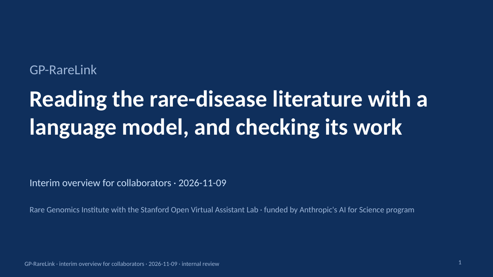
Slide 1. Welcome. This is a short overview of GP-RareLink, a project that reads the published literature on rare genetic diseases with a language model, turns it into structured records, and checks every value against its source. It is funded by Anthropic's AI for Science program and run by the Rare Genomics Institute with the Stanford OVAL lab. You are seeing interim results, for internal review.
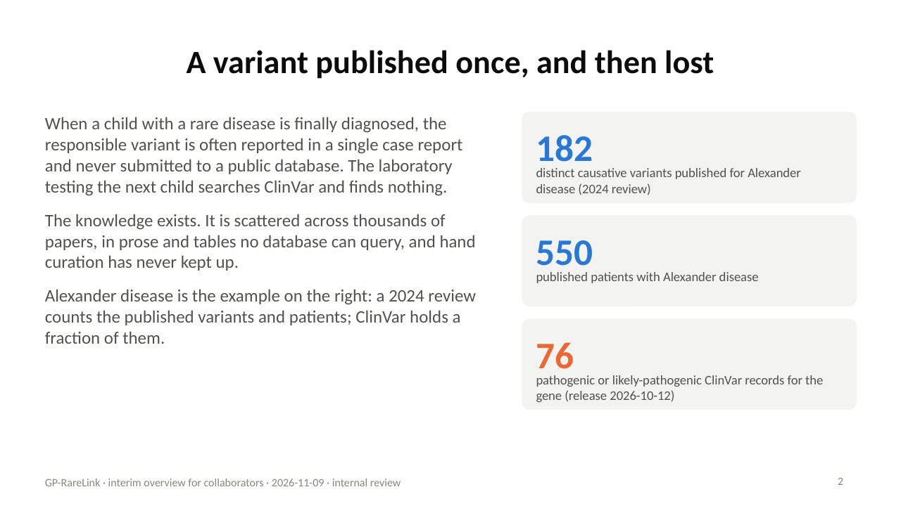
Slide 2. Here is the problem. When a child with a rare disease is diagnosed, the responsible variant is often reported once, in a case report, and never submitted to the public databases. A laboratory testing the next child searches ClinVar and finds nothing. For Alexander disease alone, a 2024 review counts 182 causative variants in 550 published patients, but ClinVar holds 76 pathogenic or likely pathogenic records for the gene. The knowledge exists; it is scattered across papers no database can query.
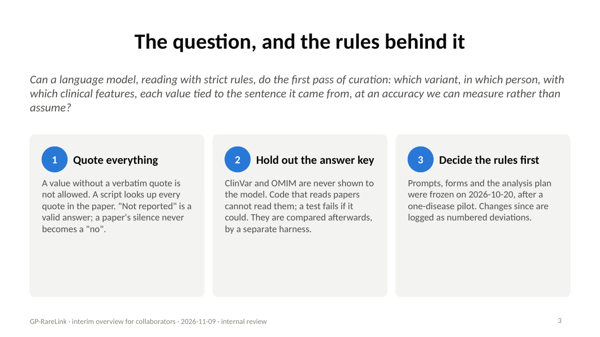
Slide 3. So the question is whether a language model, reading with strict rules, can do the first pass. Two rules make the answer checkable. First, every value the model records must carry a verbatim quote from the paper, and a script confirms the quote is really there. Second, the databases we want to fill, ClinVar and OMIM, are never shown to the model. They are held out as the answer key. And the whole analysis plan was frozen before the main run, so what you see is what we said we would report.
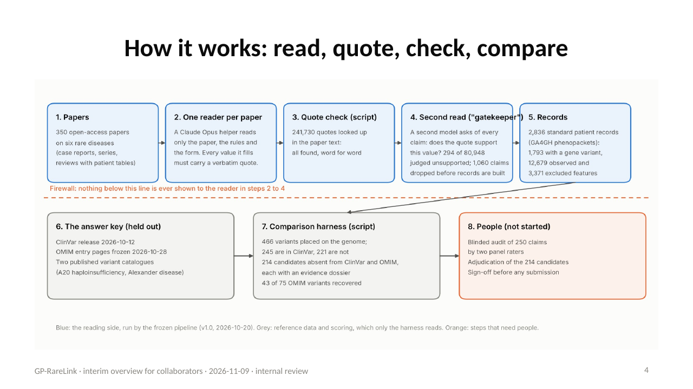
Slide 4. This is the workflow. One model reader per paper fills a structured form with quotes. A script checks every quote. A second model pass, which we call the gatekeeper, re-reads each value against its quote and drops the ones it cannot support. The result is one standard record per individual, a GA4GH phenopacket. Below the firewall, a separate harness compares the records with ClinVar, OMIM and two published catalogues, and lists the variants the databases are missing. The orange box is what has not happened yet: the human audit and the expert adjudication.
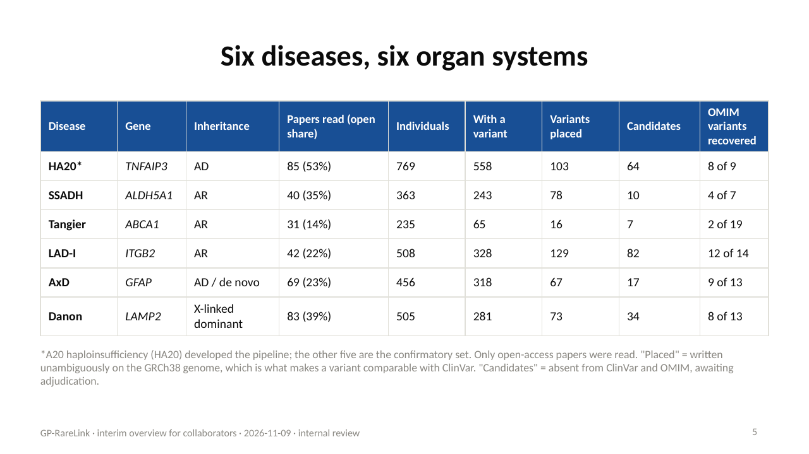
Slide 5. We ran six diseases, chosen to span inheritance modes and organ systems. A20 haploinsufficiency was the development disease, so its numbers are flagged and the other five are the confirmatory set. Only open-access papers were read, which matters later: for most of these diseases, only a fifth to a third of the literature is open.
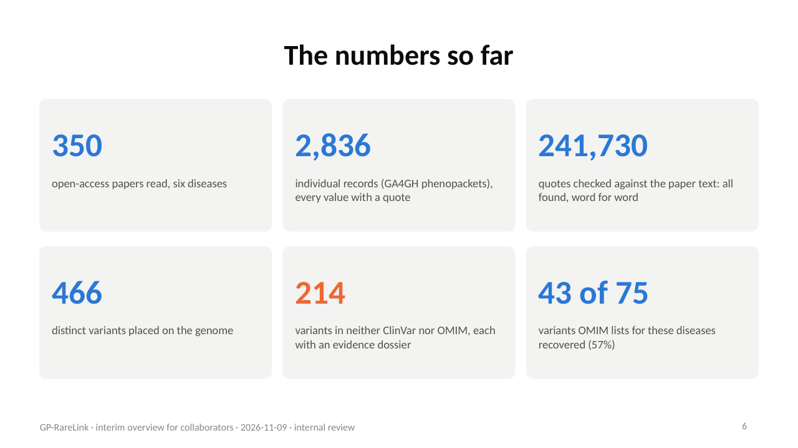
Slide 6. The headline numbers. 350 papers became 2,836 individual records, 1,793 of them carrying a variant in the disease gene. Every one of 241,730 quotes was found verbatim in its paper. 466 distinct variants could be placed on the genome. 214 of them are in neither ClinVar nor OMIM. And we recovered 43 of the 75 variants OMIM lists for these diseases.
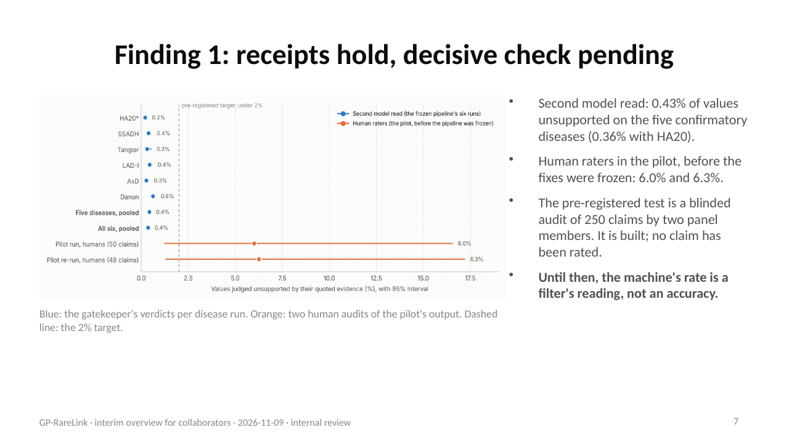
Slide 7. First finding: the receipts hold, but the decisive check has not happened. The gatekeeper judged 0.43 percent of values unsupported across the five confirmatory diseases. That is the blue. The orange is what human raters found in the pilot, before the pipeline was frozen: around six percent. The machine's reading of its own errors is far below the humans'. The pre-registered test is a blinded audit of 250 claims by two panel members. It is built, and nobody has rated a claim yet. Until then, no accuracy claim can be made.
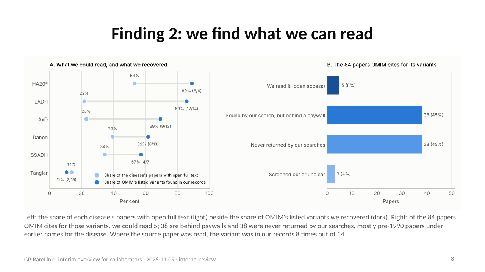
Slide 8. Second finding: we find what we can read. Against OMIM's listed variants we recovered 57 percent overall, from nearly ninety percent for the diseases whose literature is open to eleven percent for Tangier disease, whose variants come from closed papers of the early 2000s. Of the 84 papers OMIM cites as the sources for its variants, we could read 5. Where we had read the source paper, the variant was usually in our records. Access, not reading, sets the ceiling.
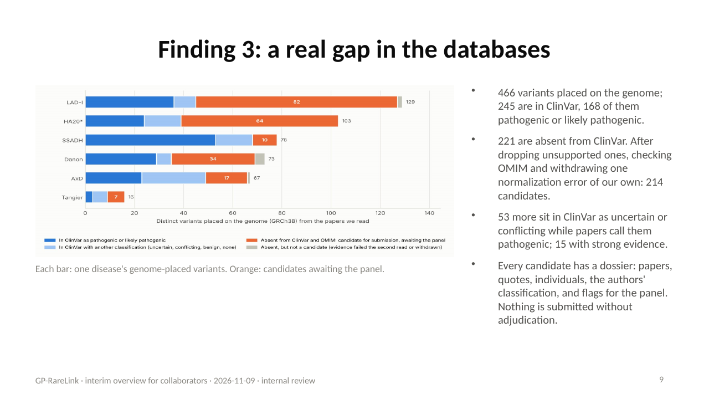
Slide 9. Third finding: the database gap is real. Of 466 genome-placed variants, 245 are in ClinVar, and 168 of those are classified pathogenic or likely pathogenic. 221 are absent from ClinVar; after the checks, 214 remain as candidates, each with an evidence dossier listing every paper, every quote and every individual. 53 more sit in ClinVar as uncertain or conflicting while the papers call them pathogenic. Nothing is submitted without expert adjudication.
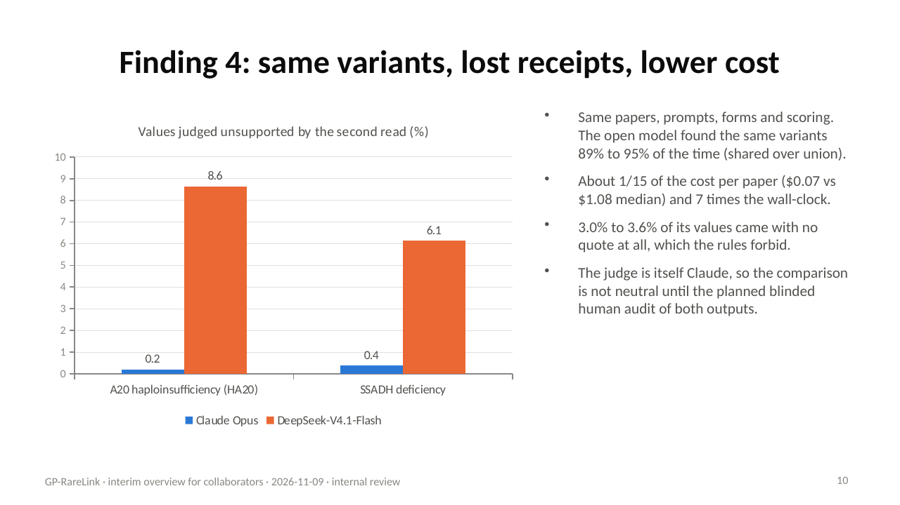
Slide 10. Fourth finding: a cheaper open-weight model finds the same variants and loses the receipts. On identical inputs, DeepSeek found the same variants about 89 to 95 percent of the time at roughly one 15th of the cost. But it left 3.0 to 3.6 percent of its values with no quote at all, and the gatekeeper rejected 6.14 to 8.64 percent of its claims, against Claude's 0.20 to 0.38.
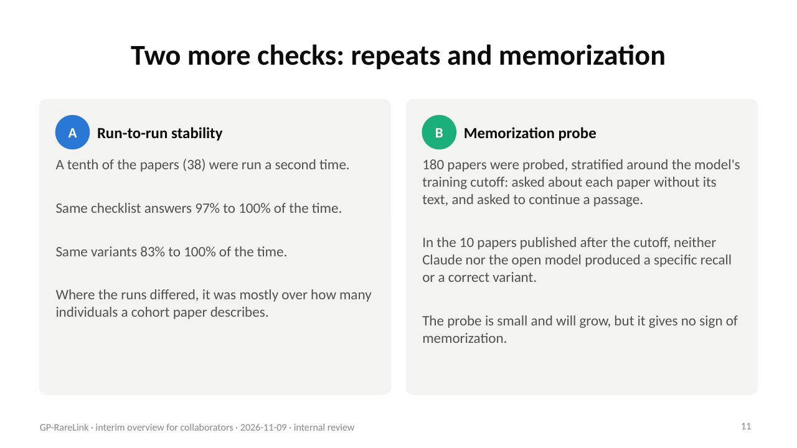
Slide 11. Two more checks. Running a tenth of the papers twice gave the same checklist answers 97 to 100 percent of the time and the same variants 83 to 100 percent of the time. And a memorization probe on 180 papers found no sign that either model recalled the papers from training rather than reading them.
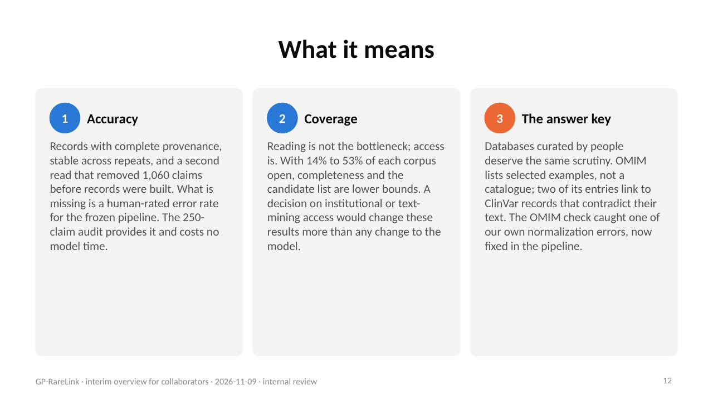
Slide 12. What does this mean? On accuracy: the pipeline produces records with complete provenance, but a human-rated error rate is the one number it lacks, and the audit that provides it costs no model time. On coverage: a decision on access to paywalled papers would change these results more than any change to the model. On the answer key: databases curated by people deserve the same scrutiny; OMIM caught one of our normalization errors, and we found two OMIM entries linked to the wrong ClinVar records.
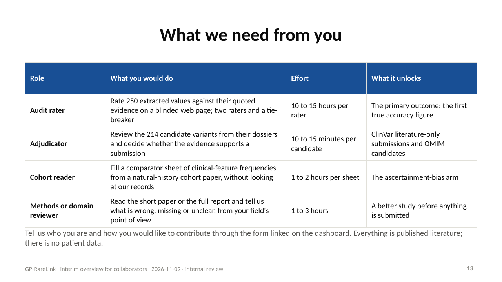
Slide 13. This is where you come in. We need two raters for the 250-claim audit, roughly ten to fifteen hours each, and a tie-breaker. We need experts to adjudicate the 214 candidates from their dossiers. We need people to fill four comparator sheets from natural-history cohorts. And we need reviewers for the methods and the paper. The dashboard has a short form where you can tell us who you are and how you would like to contribute.
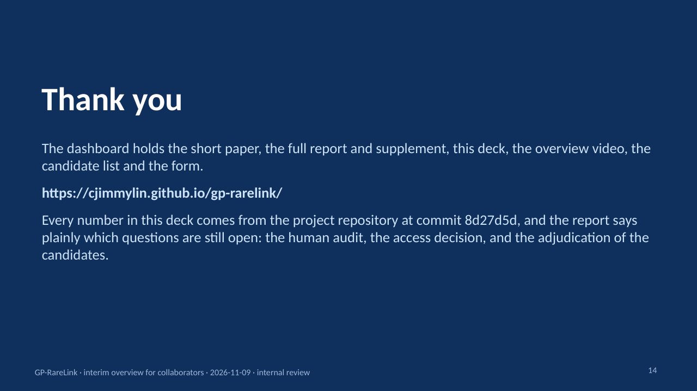
Slide 14. Thank you. Everything in this overview, the papers, the deck, the candidate list and the form, is on the dashboard. The numbers all trace to files in the project repository, and the report says plainly which questions are still open. We look forward to working with you.